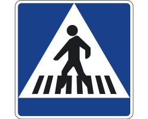

Indicaciones
Solo te indican lo que hay próximo
 Esas que nos indican acciones que debemos hacer, como ponerse el cinturón o no fumar en determinadas zonas.
Esas que nos indican acciones que debemos hacer, como ponerse el cinturón o no fumar en determinadas zonas.
son aquellas que se utilizan para que los usuarios de las calzadas y calles conozcan las especiales reglas de advertencia en los cruces, intersecciones o pasos estrechos, y constituyen una de las categorías de las señales de reglamentación.
 Si las encuentras de frente, en el sentido de tu marcha y a partir del lugar en que están situadas, prohíben el acceso a los vehículos.
Si las encuentras de frente, en el sentido de tu marcha y a partir del lugar en que están situadas, prohíben el acceso a los vehículos.